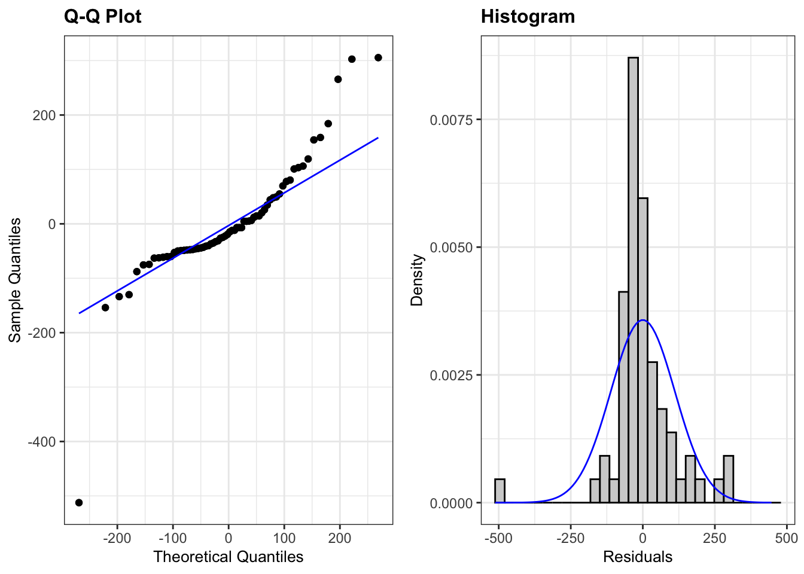

The 2000 US Presidential election of Al Gore versus George W. Bush was a very close competition, coming down to just a few hundred votes. The race came to a fraught and contentious end in the state of Florida, where the weight of America’s future leadership fell upon heavily scrutinized county-level votes. In Palm Beach County, Democratic voters disputed ballot results, claiming that a confusing ballot design had caused voters to accidentally vote for Reform Party candidate Pat Buchanan instead of Gore. This report aims to analyze whether Buchanan received more votes than expected in Palm Beach County. We used data from all 67 counties in Florida in order to create a linear model of Bush votes versus Buchanan votes. We then created a 95% prediction interval to predict the number of Buchanan votes expected in Palm Beach County if no anomaly had occurred.
In order to create a prediction interval using the data from the other 66 counties, I removed the disputed outlier (Palm Beach County) from the dataset and fit the regression of logged votes for Bush in 2000 against logged votes for Buchanan in 2000. Logging these variables brought the data closer to a linear model.
After taking the disputed outlier (Palm Beach County) out of the dataset and logging the variables, the equation for predicting Buchanan votes from Bush votes per county was:
\[ (log(Buchanan2000) | log(Bush2000)) = -2.34149+0.73096 log(Bush2000) \]
with a prediction standard error of 0.4302319.
With this model, we can use Palm Beach County’s number of votes for Bush in 2000 (152846) to predict the number of votes Palm Beach County should have had for Buchanan. After unlogging the y outputs, the predicted number of Florida county-level votes for Buchanan with 152846 votes for Bush in 2000 is 592.368.
We are 95% confident that a Florida county with 152846 votes for Bush in 2000 will have between 250.800 and 1399.16 votes for Buchanan.
Our findings found that the observed number of Palm Beach County votes for Buchanan in 2000 rested outside the maximum end of the 95% prediction interval (1399.16) by 2007.84 votes. This indicates that Palm Beach County deviated from the trend of Buchanan and Bush votes in Florida Counties. However, this analysis is limited by the assumption that the relationship between Buchanan and Bush votes in this county is the same as in others in Florida. Other confounding variables outside of ballot design could have affected this deviation.
## County Buchanan2000 Bush2000
## 1 Alachua 262 34062
## 2 Baker 73 5610
## 3 Bay 248 38637
## 4 Bradford 65 5413
## 5 Brevard 570 115185
## 6 Broward 789 177279## `geom_smooth()` using formula = 'y ~ x'##
## The downloaded binary packages are in
## /var/folders/0r/m7n19p454m9cnzzy_wczy7km0000gn/T//RtmphKV88F/downloaded_packages
## `geom_smooth()` using formula = 'y ~ x'## [1] 67## [1] 67## County Buchanan2000 Bush2000
## 67 Palm Beach 3407 152846predict(ex0825_no_Palm_Beach_logged_lm,
newdata = data.frame(Bush2000 = 152846),
interval = "prediction",
se.fit=T) #prediction for Palm Beach's Buchanan2000## $fit
## fit lwr upr
## 1 6.384143 5.524656 7.24363
##
## $se.fit
## [1] 0.09416562
##
## $df
## [1] 64
##
## $residual.scale
## [1] 0.4198003se.pred <- sqrt(0.4198003^2 + 0.09416562^2) #calculating the SE for prediction
ex0825_pred <- data.frame(ex0825_no_Palm_Beach,
predict(ex0825_no_Palm_Beach_logged_lm, interval = "prediction")) #creating prediction model## Warning in predict.lm(ex0825_no_Palm_Beach_logged_lm, interval = "prediction"): predictions on current data refer to _future_ responseshead(ex0825_pred)## County Buchanan2000 Bush2000 fit lwr upr
## 1 Alachua 262 34062 5.286788 4.440368 6.133207
## 2 Baker 73 5610 3.968401 3.119627 4.817176
## 3 Bay 248 38637 5.378909 4.531913 6.225905
## 4 Bradford 65 5413 3.942271 3.093250 4.791293
## 5 Brevard 570 115185 6.177360 5.321359 7.033361
## 6 Broward 789 177279 6.492540 5.631040 7.354041## `geom_smooth()` using formula = 'y ~ x'summary(ex0825_no_Palm_Beach_logged_lm)##
## Call:
## lm(formula = log(Buchanan2000) ~ log(Bush2000), data = ex0825_no_Palm_Beach)
##
## Residuals:
## Min 1Q Median 3Q Max
## -0.95631 -0.21236 0.02503 0.28102 1.02056
##
## Coefficients:
## Estimate Std. Error t value Pr(>|t|)
## (Intercept) -2.34149 0.35442 -6.607 9.07e-09 ***
## log(Bush2000) 0.73096 0.03597 20.323 < 2e-16 ***
## ---
## Signif. codes: 0 '***' 0.001 '**' 0.01 '*' 0.05 '.' 0.1 ' ' 1
##
## Residual standard error: 0.4198 on 64 degrees of freedom
## Multiple R-squared: 0.8658, Adjusted R-squared: 0.8637
## F-statistic: 413 on 1 and 64 DF, p-value: < 2.2e-16